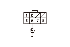
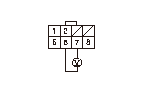
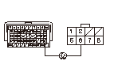

DTC P0713 (28-4)
DTC P0713（28-4）:
ATF温度センサ断線
ATF温度センサの電圧確認
1-1
HDSのATテスト モード メニュー データ リストから、ATF温度センサ（V）の電圧を確認する
◆ 4.93V以上か
YES
-
ステップ
2
へ進む
NO
-
一時的な故障
TATF回路の断線点検
2-1
イグニッション スイッチをLOCK（
0
）にする
2-2
シフト ソレノイド ハーネス カプラの接続を外す
2-3
イグニッション スイッチをON（
II
）にする
2-4
シフト ソレノイド ハーネス カプラのNo.6端子とボディ アース間の電圧を測定する
◆ 約5Vか
YES
-
ステップ
3
へ進む
NO
-
ステップ
4
へ進む

TATF電圧の点検
3-1
シフト ソレノイド ハーネス カプラのNo.6端子とNo.7端子間の電圧を測定する
◆ 約5Vか
YES
-
トランスミッション内部のATF温度センサ回路の断線、
ATF温度センサ（シフト ソレノイド ハーネス一体）を交換する
、交換作業終了後ステップ
5
へ進む
NO
-
PGM-FI ECUカプラB（49P）のNo.34端子とシフト ソレノイド ハーネス カプラ間のコードの断線、故障修理完了後ステップ
5
へ進む

TATF回路の断線点検
4-1
イグニッション スイッチをLOCK（
0
）にする
4-2
HDSでSCS回路の短絡を行う
4-3
PGM-FI ECUカプラB（49P）の接続を外す
4-4
PGM-FI ECUカプラB（49P）のNo.28端子とシフト ソレノイド ハーネス カプラのNo.6端子間の導通を点検する
◆ 導通があるか
YES
-
PGM-FI ECUカプラの接続状態を確認する、カプラに異常がなくPGM-FI ECUのプログラムが最新でない場合は、
最新バージョンにアップデートする
、プログラムが最新バージョンの場合は、
新品のPGM-FI ECUに交換して
再点検する
NO
-
PGM-FI ECUカプラB（49P）のNo.28端子とシフト ソレノイド ハーネス カプラのNo.6端子間のコードの断線、故障修理完了後ステップ
5
へ進む
故障修理完了の確認
5-1
HDSでDTCのクリアを行う
5-2
Pポジションでエンジンを始動し、20秒間以上待機する
5-3
HDSのATテスト モード メニューから、DTCs/フリーズ データのDTCモニタ ツールでDTC
P0713
（28-4）のOBDステータスを確認する
◆ 正常判定か
YES
-
故障修理完了
NO
-
ステップ
1
から再点検する
OBDステータスが未完了の場合は再点検する
